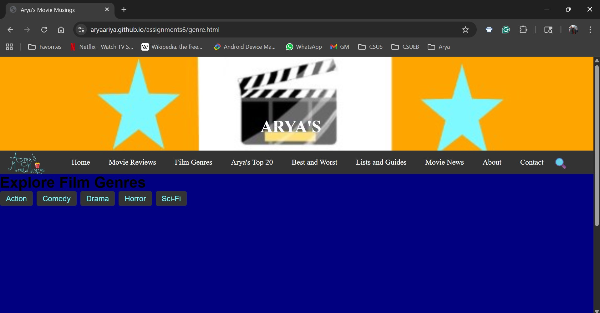
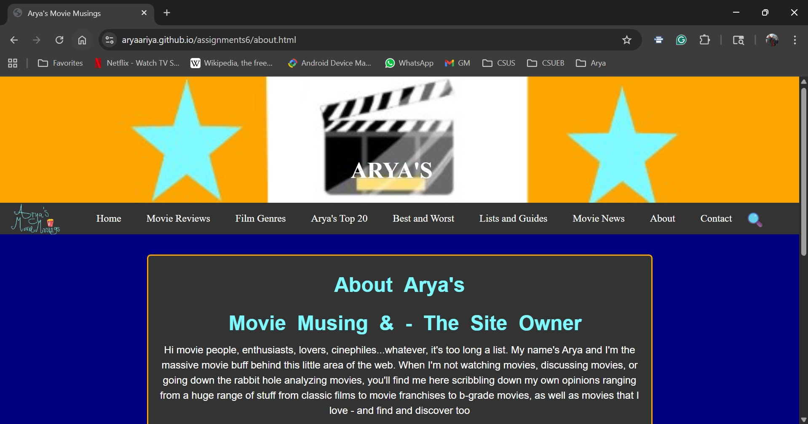
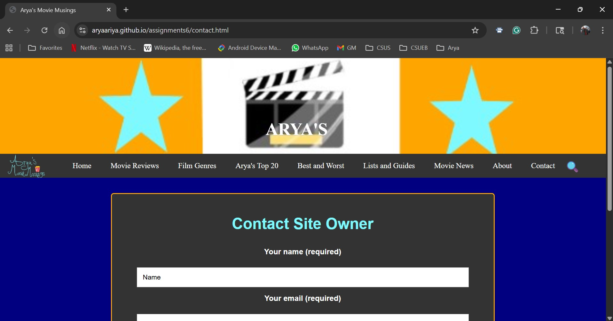
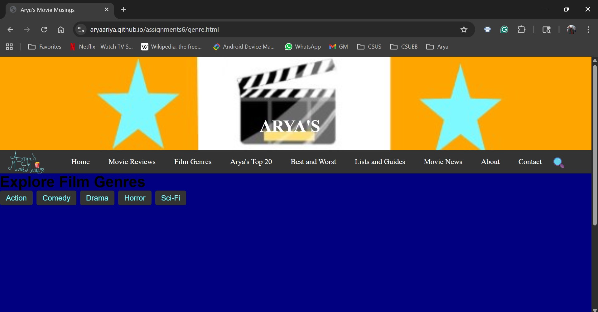
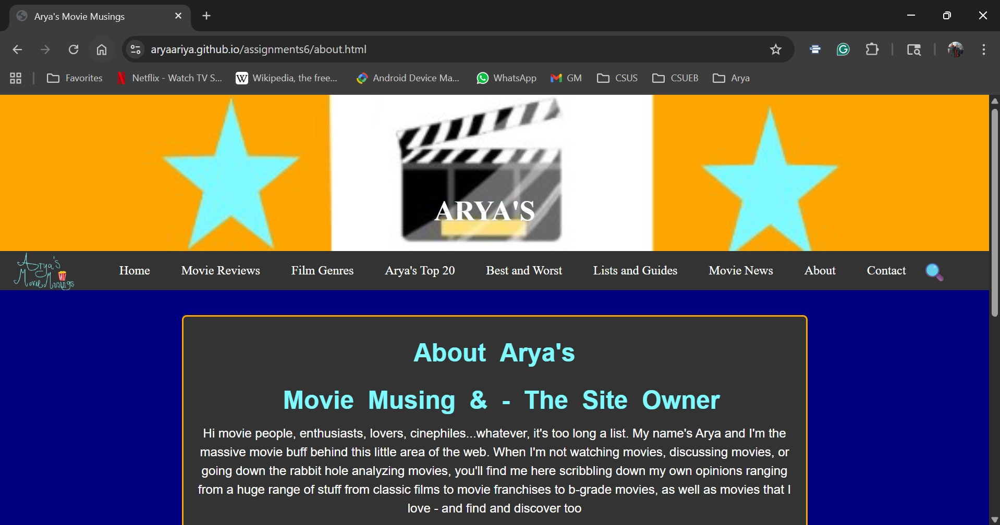
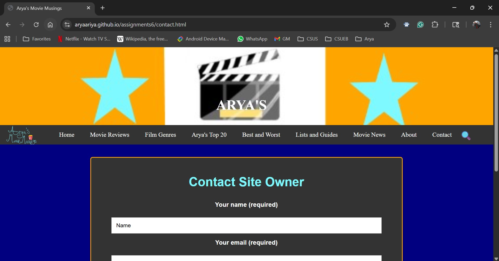
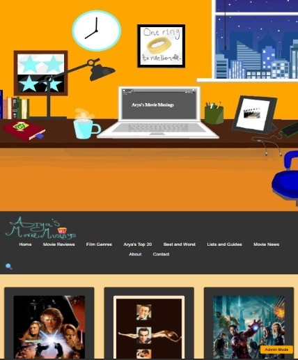
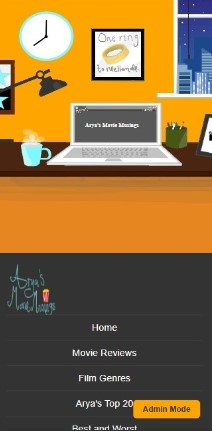

Arya's Movie Musings
Arya's Movie Musings is a personal movie review site designed to bring together thoughtful analysis, accessible recommendations, and cinematic visual identity.
Overview
As a lifelong movie enthusiast, I wanted to create a space that reflects my voice and opinions while solving real usability issues and gaps that I noticed across other movie review sites.
The goal was to design, code, and create a platform that feels both insightful and approachable, offering value to a wide range of movie lovers, ranging from casual viewers to dedicated cinephiles.
Role
- UX researcher
- UX designer
- UX writer
- UX engineer
Tools
- Visual Studio Code
- Figma
- Draw.io
- GitHub
- TMDB Database (The Movie DB) API
- Formspree.io
Details
- Duration: November 2, 2025 - December 14, 2025
- Client: Personal Project
Process
The process for this project consists of the following:
Research
- Context study
- Target audience
- Pain Points
- Competitive Audit
Analysis
- Problem statement
- Project Goals
- Use Cases
Ideation
- Information Architecture
- Visual Design Direction
Design
- Low-Fidelity Wireframes
- Prototypes
Feedback
- Peer Critiques
- Before/After Critiques
Handoff
- Final product
- Case Study Summary
- Reflection
- Next Steps
Research
Context study
The current landscape of movie review platforms is polarized — academic sites overwhelm casual viewers, while commercial platforms prioritize volume over depth. Yet movie lovers want more than reviews; they want a platform that helps them discover, understand, and enjoy films in a way that matches their pace, interests, and viewing habits.
I studied how users currently interact with movie review platforms, focusing on navigation, categorization, readability, personalization, and mobile experience. Users consistently expect platforms that:
- Provide quick, trustworthy recommendations
- Offer clear content warnings and age guidance
- Support both casual browsing and deep analysis
- Organize films with consistent, intuitive categories
- Feel accessible and easy to read across devices
- Balance personality with clarity and structure
Target Audience
I identified four users:
- Primary users:
- Cinephiles and Film Students
- Casual Viewers
- Secondary users
- Parents
- Genre Fans (Horror, Sci-Fi, Action, etc.)
Pain Points
Across all user groups, several consistent frustrations emerged:
- Poor search and filtering tools
- Inconsistent categorization of films
- Sites feel either too posh/academic/stuffy or too commercial
- Mobile experiances are often poorly optimized
Competitive Audit
I did a competitive audit on two websites:
Moria - The Science Fiction, Horror, & Fantasy Film Review
Strengths
- Easy navigation
- Simple color pallette
Weaknesses
- Lacks color and polish
- Feels cramped
- Needs more categories and imagery
Key Takeaways
Moria highlighted how clear navigation and straightforward structure can make niche film content feel approachable, even when the visual design is minimal.
RogerEbert.com
Strengths
- Strong navigation
- Good brand consistency
- Great search and filter
- Clean layout
Weaknesses
- Color pallette is slightly too bright
Key Takeaways
RogerEbert.com demonstrated how consistent branding and robust search tools can build trust and help users quickly find the content they want.
Analysis
Problem Statement
Movie lovers struggle to find a movie review platform that offers both quick, accessible recommendations and deeper, well-organized analysis - without clutter, inconsistency, or an overly academic tone.
Project Goals
The website needed to:
- Inform users through reviews, ratings, and critiques
- Guide users toward movies that match their interests, mood, or platform
- Support discovery with filters, lists, and genre hubs
Use cases
I want to read a deep, thoughtful analysis, opinion, and review of a movie
I want to stay updated on trailers, interviews, and award predictions
I'm looking for a movie to watch on Netflix or Hulu
I'm trying to find genre-specific recommendations
Ideation
Information Architecture
Based on the insights earlier, I created a sitemap to define the structure and hierarchy of the website, ensuring intuitive navigation and clear content organization.

Visual Design Direction
I created several stylesheets to establish the color palette, typography, imagery, and several of the UI elements. The goal was to create a warm, cinematic aesthetic that feels professional yet personal.

Design
Low-fidelity Wireframes
I created a few low-fidelity wireframes in Figma to visualize consistent layouts across desktop, tablet, and mobile. These wireframes focused on structure, hierarchy, and navigation.

Prototypes
I coded early prototypes in Visual Studio Code, building several pages to test layout, responsiveness, and overall feel. At this stage, functionality was limited because the TMDB API integration and form handling required additional setup.
 





I also tested responsiveness across devices to ensure a smooth experience on desktop, tablet, and mobile.
Feedback
Peer Critiques
I shared my prototype with several of my peers and gathered implementable and actionable feedback. The most notable ones were:
"Banner image is too plain and simple"
Peers noted that while the site stands out in color palette, the banner image was too simple and didn't contribute to the site's identity.
"The horizontal drop-down menus are too small and make the site feel cluttered"
Some peers felt that the horizontal drop-down menus made the site feel cluttered and were hard to see.
"The font on the navigation bar could be changed"
Many peers felt that the font used on the navigation bar doesn't match the fonts used by the rest of the site.
"The navigation is comprehensive, but could be reduced"
Peers highlighted that while the navigation is easy to navigate, there are a lot of navigation items, and they take up a lot of space.
"The background color and the tags color could be changed"
Peers noticed that the background color and the tags color were too dark to be noticed, since it was dark blue on black, which made it hard to notice and barely visible.
"The logo size could be increased"
Peers felt that the logo was tiny, and as such was not prominent and not visible as much.
Before/After Critiques
Before
The banner/header image was too simple and plain, which didn't convey anything or add anything to the site.
After
I replaced the old banner image with a new one that I created and drew. I also replaced the banner logo text with something simpler.
Before
The horizontal dropdown menus make the site feel visually cluttered and are too small.
After
I changed the horizontal dropdown menus into vertical dropdown menus.
Before
The font used on the navigation bar doesn't match the rest of the site.
After
I replaced the font on the navigation with the main font used by the rest of the site to make it feel more unified and cohesive.
Before
The navigation bar had too many categories, which could feel intimidating for users and made the site feel visually cluttered.
After
I consolidated categories into fewer primary options, and I discarded most of the secondary options for a more intuitive, cleaner nav.
Before
The background color and the movie tags' color were too dark to be noticed.
After
I changed the navy blue background to apricot and the movie tags' color to tangerine, making the site more visually appealing and visible.
Before
The logo was tiny, and so it wasn't prominent or visible.
After
I increased the size of both the logo and the container, thus making it more prominent.
Handoff
Final Implementation
I successfully implemented and integrated both the TMDB Database and Formspree.io into the system, making the final iteration fully functional and interactive. With TMDB powering dynamic movie data and Formspree.io handling contact submissions, the site now supports real user engagement with film information.
Live Website:
I also conducted another round of responsive testing to ensure the layout performs smoothly across desktop, tablet, and mobile devices.  